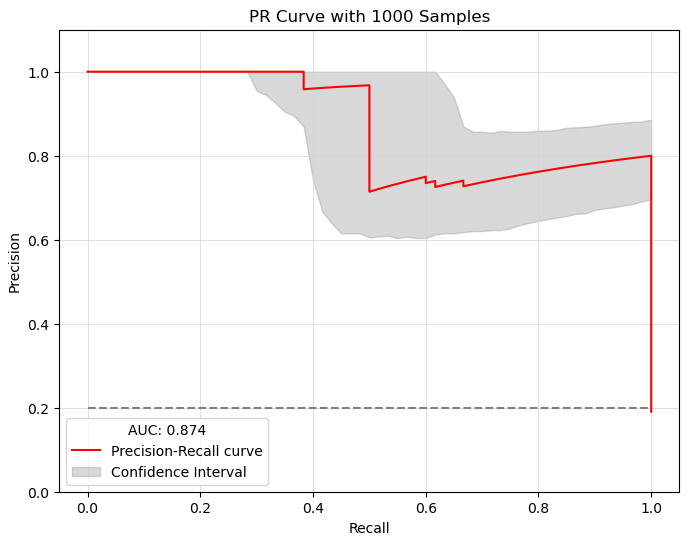
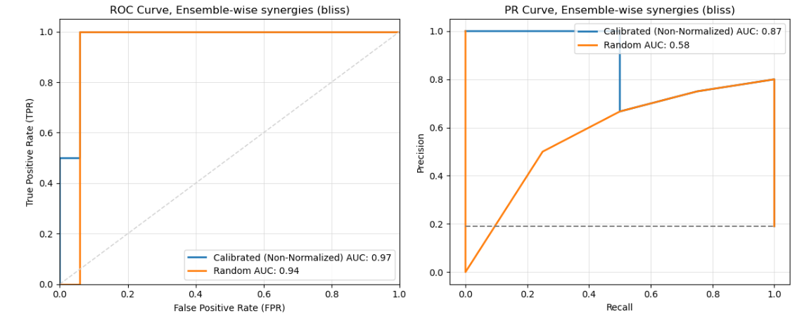

Statistics
This page provides detailed explanations for two key statistical methods in PyDrugLogics: sampling_with_ci and compare_two_simulations.
Sampling with Confidence Intervals
The sampling_with_ci function calculates confidence intervals for the Precision-Recall curve of Boolean models using bootstrap resampling. It also generates sampling results, PR Curve with Confidence Interval and staitstical summary about the results.
Process
Sampling: Boolean models are sampled randomly based on the specified ratio.
Bootstrap Resampling: Precision-Recall Curves are generated for bootstrap samples.
Confidence Interval Calculation:
Confidence intervals are estimated for precision values at different recall points.
Summary statistics include mean, standard deviation, and margin of error.
Arguments
boolean_models: (List) List of BooleanModel instances to evaluate.
observed_synergy_scores: (List[str]) List of experimentally observed synergy scores.
model_outputs: (ModelOutputs) Model outputs used for evaluation.
perturbations: (Perturbations) List of perturbations applied to the models.
synergy_method: (str, default=’bliss’) Method for evaluating synergy (‘hsa’ or ‘bliss’).
repeat_time: (int, default=10) Number of times to repeat the sampling process.
sub_ratio: (float, default=0.8) Proportion of models to sample in each iteration.
boot_n: (int, default=1000) Number of bootstrap resampling iterations for confidence interval estimation.
confidence_level: (float, default=0.9) Confidence level for confidence interval calculations.
plot: (bool, default=True) Whether to display the PR curve.
plot_discrete: (bool, default=False) Whether to plot discrete points on the PR curve.
save_result: (bool, default=True) Whether to save the sampling results.
with_seeds: (bool, default=True) Whether to use a fixed seed for reproducibility.
seeds: (int, default=42) Seed value for random number generation.
Initialization
def sampling_with_ci(boolean_models: List, observed_synergy_scores: List[str],
model_outputs: Any, perturbations: Any,
synergy_method: str = 'bliss', repeat_time: int = 10,
sub_ratio: float = 0.8, boot_n: int = 1000,
confidence_level: float = 0.9, plot: bool = True,
plot_discrete: bool = False, save_result: bool = True,
with_seeds: bool = True, seeds: int = 42) -> None:
Example Results
Precision-Recall Curve with Confidence Intervals
{kind=link}
Saved File Example
Synergy Score Sample 1
# Date: 2024/11/19, Time: 10:49
# Synergies (bliss)
perturbation_name synergy_score
PI-PD -0.1580120888736708
PI-CT 0.002975517890772106
PI-BI 0.01302189111677321
PI-PK -0.004479748223085389
PI-AK 0.07575392975581308
Sampling wit CI statistical summary
Date: 2024/11/19, Time: 10:49
Sampling Results
Point Estimate (Mean): 0.483440
Standard Deviation: 0.262091
Standard Error: 0.014934
Confidence Interval: (0.454170, 0.512711)
Confidence Level: 95.0%
Critical Value: 1.959964
Margin of Error: 0.029270
Sample Size: 308
Output
Precision-Recall Curve with Confidence Intervals: A plot showing the PR curve and confidence intervals.
AUC-PR: The Area Under the Curve for the PR curve.
Sampling Results: Tabulated results saved to a directory, including synergy scores and confidence intervals.
Statistical summary: Provides a summary that contains information about the result. Data: Point Estimate (Mean), Standard Deviation, Standard Error, Confidence Interval, Confidence Level, Critical Value, Margin of Error, Sample Size.
Compare Two Simulations
The compare_two_simulations function compares the results of two run of train and predict. It also supports normalization of the first provided Boolean Model.
Process
Run Simulations: Predict synergy scores for each set of Boolean models.
Normalization: Optionally normalize the first set of results using calibrated synergy scores.
Curve Generation: Generate ROC and PR curves for each set of predictions.
Save Results: Synergy scores are saved to the specified directory.
Arguments
boolean_models1: (List) List of the best Boolean Models from the first simulation set.
boolean_models2: (List) List of the best Boolean Models from the second simulation set.
observed_synergy_scores: (List[str]) List of experimentally observed synergy scores for comparison.
model_outputs: (ModelOutputs) Model outputs used for evaluation.
perturbations: (Perturbations) List of perturbations applied to the models.
synergy_method: (str, default=’bliss’) Method for evaluating synergy (‘hsa’ or ‘bliss’).
label1: (str, default=’Models 1’) Label for the first set of results.
label2: (str, default=’Models 2’) Label for the second set of results.
normalized: (bool, default=True) Whether to normalize the first set of results.
plot: (bool, default=True) Whether to display ROC and PR curves.
save_result: (bool, default=True) Whether to save the comparison results.
Initialization
def compare_two_simulations(boolean_models1: List, boolean_models2: List,
observed_synergy_scores: List[str], model_outputs: Any,
perturbations: Any, synergy_method: str = 'bliss',
label1: str = 'Models 1', label2: str = 'Models 2',
normalized: bool = True, plot: bool = True,
save_result: bool = True) -> None:
Example Results
Picture: Comparison of ROC and PR Curves
{kind=link}
Saved File Examples
# Date: 2024/11/19, Time: 10:49
# Synergies (bliss)
perturbation_name synergy_score
PI-PD -0.1580120888736708
PI-CT 0.002975517890772106
PI-BI 0.01302189111677321
PI-PK -0.004479748223085389
PI-AK 0.07575392975581308